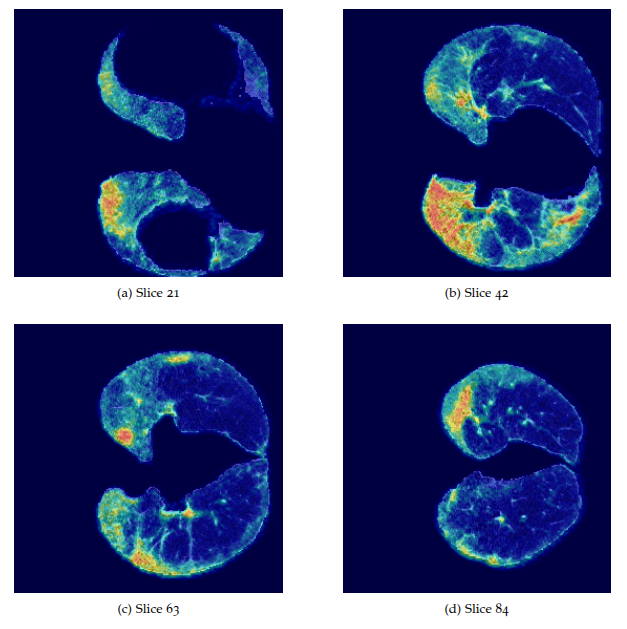
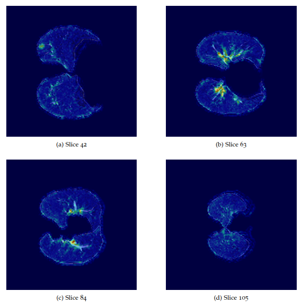
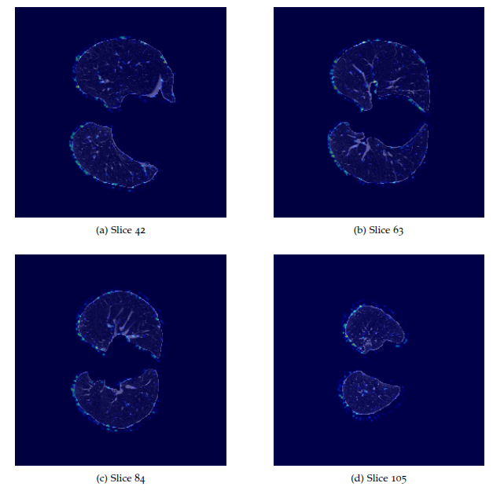
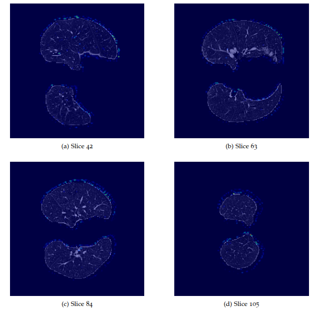

Resultados del Trabajo Fin de Grado
Resultados DL3D
Resultados con Deep Learning con solo volúmenes 3D y con el modelo DenseNet121
| Set | Batch Size | LR | Weight Decay | Dropout | Preprocesado | Accuracy | F1 | TPR | TNR | G-Mean |
|---|---|---|---|---|---|---|---|---|---|---|
| TEST | 4 | 0.0010 | 0.00000 | 0.3 | (64,64,64) HU [-1000,400] | 0.696 | 0.680 | 0.679 | 0.709 | 0.691 |
| VALIDATION | 4 | 0.0010 | 0.00000 | 0.3 | (64,64,64) HU [-1000,400] | 0.720 | 0.697 | 0.720 | 0.722 | 0.715 |
| TEST | 16 | 0.0010 | 0.00000 | 0.4 | (64,64,64) HU [-1000,400] | 0.680 | 0.687 | 0.747 | 0.619 | 0.674 |
| VALIDATION | 16 | 0.0010 | 0.00000 | 0.4 | (64,64,64) HU [-1000,400] | 0.650 | 0.640 | 0.676 | 0.627 | 0.650 |
| TEST | 16 | 0.0010 | 0.00000 | 0.3 | (64,64,64) HU [-1000,400] | 0.680 | 0.713 | 0.830 | 0.542 | 0.666 |
| VALIDATION | 16 | 0.0010 | 0.00000 | 0.3 | (64,64,64) HU [-1000,400] | 0.660 | 0.626 | 0.633 | 0.685 | 0.655 |
| TEST | 8 | 0.0010 | 0.00000 | 0.2 | (64,64,64) HU [-1000,400] | 0.656 | 0.664 | 0.733 | 0.592 | 0.652 |
| VALIDATION | 8 | 0.0010 | 0.00000 | 0.2 | (64,64,64) HU [-1000,400] | 0.650 | 0.620 | 0.631 | 0.664 | 0.643 |
| TEST | 16 | 0.0010 | 0.00001 | 0.4 | (128,128,128) HU [-1350,150] | 0.664 | 0.655 | 0.664 | 0.662 | 0.650 |
| VALIDATION | 16 | 0.0010 | 0.00001 | 0.4 | (128,128,128) HU [-1350,150] | 0.650 | 0.629 | 0.656 | 0.653 | 0.646 |
| TEST | 16 | 0.0010 | 0.00000 | 0.2 | (64,64,64) HU [-1000,400] | 0.656 | 0.648 | 0.697 | 0.620 | 0.645 |
| VALIDATION | 16 | 0.0010 | 0.00000 | 0.2 | (64,64,64) HU [-1000,400] | 0.660 | 0.624 | 0.609 | 0.702 | 0.650 |
| TEST | 32 | 0.0010 | 0.00000 | 0.2 | (64,64,64) HU [-1350,150] | 0.664 | 0.629 | 0.629 | 0.692 | 0.644 |
| VALIDATION | 32 | 0.0010 | 0.00000 | 0.2 | (64,64,64) HU [-1350,150] | 0.690 | 0.668 | 0.676 | 0.707 | 0.684 |
| TEST | 32 | 0.0010 | 0.00000 | 0.3 | (64,64,64) HU [-1350,150] | 0.656 | 0.679 | 0.783 | 0.544 | 0.643 |
| VALIDATION | 32 | 0.0010 | 0.00000 | 0.3 | (64,64,64) HU [-1350,150] | 0.630 | 0.656 | 0.760 | 0.520 | 0.622 |
| TEST | 4 | 0.0010 | 0.00000 | 0.2 | (64,64,64) HU [-1350,150] | 0.640 | 0.659 | 0.750 | 0.546 | 0.636 |
| VALIDATION | 4 | 0.0010 | 0.00000 | 0.2 | (64,64,64) HU [-1350,150] | 0.680 | 0.673 | 0.716 | 0.647 | 0.677 |
| TEST | 8 | 0.0010 | 0.00001 | 0.4 | (64,64,64) HU [-1000,400] | 0.640 | 0.674 | 0.800 | 0.501 | 0.629 |
| VALIDATION | 8 | 0.0010 | 0.00001 | 0.4 | (64,64,64) HU [-1000,400] | 0.670 | 0.664 | 0.720 | 0.627 | 0.663 |
| TEST | 8 | 0.0010 | 0.00000 | 0.4 | (64,64,64) HU [-1350,150] | 0.656 | 0.710 | 0.867 | 0.465 | 0.626 |
| VALIDATION | 8 | 0.0010 | 0.00000 | 0.4 | (64,64,64) HU [-1350,150] | 0.680 | 0.688 | 0.762 | 0.616 | 0.674 |
| TEST | 4 | 0.0010 | 0.00001 | 0.5 | (128,128,128) HU [-1000,400] | 0.648 | 0.671 | 0.783 | 0.534 | 0.619 |
| VALIDATION | 4 | 0.0010 | 0.00001 | 0.5 | (128,128,128) HU [-1000,400] | 0.650 | 0.655 | 0.736 | 0.571 | 0.634 |
| TEST | 4 | 0.0010 | 0.00000 | 0.4 | (64,64,64) HU [-1350,150] | 0.616 | 0.643 | 0.730 | 0.511 | 0.601 |
| VALIDATION | 4 | 0.0010 | 0.00000 | 0.4 | (64,64,64) HU [-1350,150] | 0.690 | 0.703 | 0.784 | 0.616 | 0.683 |
| TEST | 4 | 0.0010 | 0.00000 | 0.4 | (128,256,256) HU [-1350,150] | 0.600 | 0.641 | 0.761 | 0.452 | 0.572 |
| VALIDATION | 4 | 0.0010 | 0.00000 | 0.4 | (128,256,256) HU [-1350,150] | 0.670 | 0.669 | 0.720 | 0.635 | 0.668 |
| TEST | 8 | 0.0010 | 0.00000 | 0.4 | (128,256,256) HU [-1350,150] | 0.600 | 0.646 | 0.798 | 0.424 | 0.558 |
| VALIDATION | 8 | 0.0010 | 0.00000 | 0.4 | (128,256,256) HU [-1350,150] | 0.690 | 0.709 | 0.804 | 0.595 | 0.679 |
| TEST | 2 | 0.0001 | 0.00000 | 0.2 | (128,256,256) HU [-1350,150] | 0.576 | 0.605 | 0.714 | 0.453 | 0.541 |
| VALIDATION | 2 | 0.0001 | 0.00000 | 0.2 | (128,256,256) HU [-1350,150] | 0.660 | 0.677 | 0.784 | 0.558 | 0.656 |
| TEST | 8 | 0.0010 | 0.00000 | 0.2 | (128,256,256) HU [-1000,400] | 0.592 | 0.606 | 0.697 | 0.501 | 0.539 |
| VALIDATION | 8 | 0.0010 | 0.00000 | 0.2 | (128,256,256) HU [-1000,400] | 0.660 | 0.641 | 0.651 | 0.664 | 0.642 |
| TEST | 2 | 0.0001 | 0.00001 | 0.5 | (128,128,128) HU [-1000,400] | 0.536 | 0.527 | 0.580 | 0.501 | 0.522 |
| VALIDATION | 2 | 0.0001 | 0.00001 | 0.5 | (128,128,128) HU [-1000,400] | 0.600 | 0.570 | 0.602 | 0.591 | 0.587 |
| TEST | 4 | 0.0010 | 0.00001 | 0.5 | (128,128,128) HU [-1350,150] | 0.544 | 0.527 | 0.571 | 0.515 | 0.519 |
| VALIDATION | 4 | 0.0010 | 0.00001 | 0.5 | (128,128,128) HU [-1350,150] | 0.640 | 0.637 | 0.698 | 0.593 | 0.641 |
Resultados DL3D multimodal
Resultados con Deep Learning con volúmenes 3D y datos clínicos (modelo multimodal) con el modelo DenseNet121
| Set | Batch Size | LR | Weight Decay | Dropout | Preprocesado | Accuracy | F1 | TPR | TNR | G-Mean |
|---|---|---|---|---|---|---|---|---|---|---|
| TEST | 4 | 0.001 | 0 | 0.4 | (64,64,64) HU [-1000,400] | 0.512 | 0.459 | 0.456 | 0.559 | 0.469 |
| VALIDATION | 4 | 0.001 | 0 | 0.4 | (64,64,64) HU [-1000,400] | 0.730 | 0.700 | 0.700 | 0.760 | 0.721 |
| TEST | 4 | 0.001 | 0 | 0.4 | (64,64,64) HU [-1350,150] | 0.488 | 0.460 | 0.458 | 0.515 | 0.448 |
| VALIDATION | 4 | 0.001 | 0 | 0.4 | (64,64,64) HU [-1350,150] | 0.710 | 0.686 | 0.700 | 0.724 | 0.706 |
| TEST | 16 | 0.001 | 0 | 0.4 | (64,64,64) HU [-1000,400] | 0.480 | 0.545 | 0.700 | 0.288 | 0.428 |
| VALIDATION | 16 | 0.001 | 0 | 0.4 | (64,64,64) HU [-1000,400] | 0.660 | 0.679 | 0.784 | 0.556 | 0.618 |
| TEST | 16 | 0.001 | 0 | 0.4 | (64,64,64) HU [-1350,150] | 0.496 | 0.552 | 0.662 | 0.344 | 0.413 |
| VALIDATION | 16 | 0.001 | 0 | 0.4 | (64,64,64) HU [-1350,150] | 0.650 | 0.685 | 0.807 | 0.520 | 0.561 |
| TEST | 4 | 0.0001 | 0 | 0.4 | (64,64,64) HU [-1350,150] | 0.552 | 0.632 | 0.833 | 0.297 | 0.347 |
| VALIDATION | 4 | 0.0001 | 0 | 0.4 | (64,64,64) HU [-1350,150] | 0.570 | 0.651 | 0.871 | 0.316 | 0.369 |
| TEST | 4 | 0.0001 | 0 | 0.4 | (64,64,64) HU [-1000,400] | 0.504 | 0.565 | 0.761 | 0.268 | 0.259 |
| VALIDATION | 4 | 0.0001 | 0 | 0.4 | (64,64,64) HU [-1000,400] | 0.500 | 0.550 | 0.722 | 0.318 | 0.340 |
| TEST | 16 | 0.0001 | 0 | 0.4 | (64,64,64) HU [-1350,150] | 0.520 | 0.560 | 0.818 | 0.231 | 0.139 |
| VALIDATION | 16 | 0.0001 | 0 | 0.4 | (64,64,64) HU [-1350,150] | 0.480 | 0.506 | 0.800 | 0.236 | 0.085 |
| TEST | 16 | 0.0001 | 0 | 0.4 | (64,64,64) HU [-1000,400] | 0.488 | 0.515 | 0.800 | 0.214 | 0.053 |
| VALIDATION | 16 | 0.0001 | 0 | 0.4 | (64,64,64) HU [-1000,400] | 0.510 | 0.521 | 0.800 | 0.260 | 0.110 |
Resultados DL3D Fine-tuning
Resultados en test con validación cruzada y distintas funciones de pérdida
| Set | Dataset | Modelo | Fine Tune | Batch Size | LR | Weight Decay | Dropout | Pretrained Size | Preprocesado | Loss | Stop Criterion | Accuracy | F1 | TPR | TNR | G-Mean |
|---|---|---|---|---|---|---|---|---|---|---|---|---|---|---|---|---|
| TEST | nodulemnist3d | ResNet3D | descongelado | 16 | 1e-4 | 1e-5 | 0 | (64,64,64) | (64,64,64) HU[-1000,400] | CrossEntropyLoss+ContrastiveLoss | pérdida | 0.5920 | 0.5995 | 0.6637 | 0.5330 | 0.5792 |
| TEST | nodulemnist3d | DenseNet121 | descongelado | 16 | 1e-4 | 1e-5 | 0 | (64,64,64) | (64,64,64) HU[-1000,400] | CrossEntropyLoss | pérdida | 0.5840 | 0.5810 | 0.6288 | 0.5462 | 0.5792 |
| TEST | nodulemnist3d | ResNet3D | descongelado | 16 | 1e-4 | 1e-5 | 0 | (64,64,64) | (64,64,64) HU[-1000,400] | CrossEntropyLoss+TripletLoss | pérdida | 0.5920 | 0.5956 | 0.6788 | 0.5176 | 0.5695 |
| TEST | organmnist3d | DenseNet121 | congelado | 16 | 1e-4 | 1e-5 | 0.3 | (64,64,64) | (64,64,64) HU[-1000,400] | CrossEntropyLoss+TripletLoss | accuracy | 0.5840 | 0.5990 | 0.6621 | 0.5143 | 0.5660 |
Resultados con solo datos clínicos con AA clásico
KNN
| n_neighbors | weights | metric | Accuracy | F1 | TPR | TNR | G-Mean |
|---|---|---|---|---|---|---|---|
| 5 | uniform | euclidean | 0.520 | 0.497 | 0.509 | 0.533 | 0.509 |
| 3 | uniform | euclidean | 0.512 | 0.476 | 0.474 | 0.547 | 0.503 |
| 7 | uniform | manhattan | 0.512 | 0.468 | 0.458 | 0.563 | 0.503 |
| 5 | distance | euclidean | 0.480 | 0.466 | 0.476 | 0.487 | 0.478 |
| 9 | distance | manhattan | 0.480 | 0.404 | 0.374 | 0.577 | 0.452 |
Random Forest
| n_estimators | max_depth | min_samples_split | Accuracy | F1 | TPR | TNR | G-Mean |
|---|---|---|---|---|---|---|---|
| 100 | 5 | 2 | 0.552 | 0.443 | 0.373 | 0.712 | 0.515 |
| 200 | 10 | 4 | 0.536 | 0.442 | 0.392 | 0.665 | 0.508 |
| 300 | None | 2 | 0.504 | 0.443 | 0.424 | 0.576 | 0.485 |
LightGBM
| n_estimators | max_depth | learning_rate | Accuracy | F1 | TPR | TNR | G-Mean |
|---|---|---|---|---|---|---|---|
| 200 | 6 | 0.05 | 0.552 | 0.473 | 0.426 | 0.667 | 0.531 |
| 100 | 4 | 0.1 | 0.544 | 0.477 | 0.442 | 0.637 | 0.528 |
| 300 | 8 | 0.03 | 0.544 | 0.468 | 0.426 | 0.653 | 0.524 |
XGBoost
| n_estimators | max_depth | learning_rate | Accuracy | F1 | TPR | TNR | G-Mean |
|---|---|---|---|---|---|---|---|
| 400 | 6 | 0.01 | 0.576 | 0.498 | 0.444 | 0.695 | 0.553 |
| 200 | 5 | 0.05 | 0.568 | 0.503 | 0.461 | 0.664 | 0.552 |
| 350 | 12 | 0.02 | 0.568 | 0.494 | 0.444 | 0.679 | 0.548 |
| 300 | 8 | 0.02 | 0.568 | 0.494 | 0.444 | 0.679 | 0.548 |
| 300 | 8 | 0.03 | 0.560 | 0.489 | 0.444 | 0.679 | 0.547 |
| 150 | 8 | 0.07 | 0.560 | 0.489 | 0.442 | 0.664 | 0.540 |
| 250 | 10 | 0.05 | 0.560 | 0.479 | 0.426 | 0.679 | 0.534 |
| 100 | 4 | 0.1 | 0.552 | 0.480 | 0.444 | 0.651 | 0.534 |
| 100 | 3 | 0.2 | 0.536 | 0.455 | 0.408 | 0.649 | 0.512 |
Resultados radiómica combinado con DML y datos clínicos
Radiómica + sin datos clínicos + sin DML
| Modelo | Parámetros | Scaler | Preprocesado | Reducción de dimensionalidad | Accuracy | F1 | TPR | TNR | G-Mean |
|---|---|---|---|---|---|---|---|---|---|
| KNN | n_neighbors=5, weights=distance | StandardScaler | (128,128,128), HU [-1350,150] | - | 0.744 | 0.713 | 0.724 | 0.765 | 0.739 |
| LightGBM | n_estimators=200, learning_rate=0.1, num_leaves=31 | - | (28,28,28), HU [-1350,150] | Variance Threshold (0.01) | 0.744 | 0.703 | 0.680 | 0.791 | 0.728 |
| KNN | n_neighbors=5, weights=distance | - | (128,128,128), HU [-1350,150] | PCA (99%) | 0.736 | 0.692 | 0.688 | 0.779 | 0.724 |
| KNN | n_neighbors=7, weights=distance | MinMaxScaler | (128,256,256), HU [-1350,150] | - | 0.728 | 0.711 | 0.688 | 0.766 | 0.719 |
| KNN | n_neighbors=5, weights=uniform | StandardScaler | (128,128,128), HU [-1350,150] | - | 0.720 | 0.679 | 0.724 | 0.721 | 0.716 |
| KNN | n_neighbors=7, weights=distance | - | (128,128,128), HU [-1350,150] | Variance Threshold (0.01) | 0.712 | 0.702 | 0.741 | 0.692 | 0.711 |
| KNN | n_neighbors=7, weights=distance | - | (128,128,128), HU [-1350,150] | - | 0.712 | 0.702 | 0.741 | 0.692 | 0.711 |
| KNN | n_neighbors=7, weights=distance | MinMaxScaler | (128,128,128), HU [-1000,400] | PCA (90%) | 0.712 | 0.706 | 0.756 | 0.674 | 0.709 |
| LightGBM | n_estimators=100, learning_rate=0.1, num_leaves=50 | StandardScaler | (28,28,28), HU [-1350,150] | Variance Threshold (0.01) | 0.728 | 0.679 | 0.645 | 0.791 | 0.708 |
| LightGBM | n_estimators=50, learning_rate=0.1, num_leaves=50 | StandardScaler | (28,28,28), HU [-1350,150] | Variance Threshold (0.01) | 0.720 | 0.676 | 0.647 | 0.777 | 0.705 |
| SVM | C=10.0, kernel=rbf, gamma=scale | - | (128,256,256), HU [-1000,400] | PCA (99%) | 0.712 | 0.683 | 0.688 | 0.735 | 0.704 |
| LightGBM | n_estimators=100, learning_rate=0.1, num_leaves=50 | - | (28,28,28), HU [-1350,150] | Variance Threshold (0.01) | 0.712 | 0.681 | 0.682 | 0.733 | 0.703 |
| SVM | C=10.0, kernel=rbf, gamma=scale | - | (128,256,256), HU [-1000,400] | PCA (95%) | 0.712 | 0.683 | 0.688 | 0.734 | 0.702 |
| KNN | n_neighbors=5, weights=uniform | - | (128,128,128), HU [-1350,150] | PCA (99%) | 0.712 | 0.673 | 0.688 | 0.735 | 0.702 |
| KNN | n_neighbors=3, weights=distance | StandardScaler | (128,128,128), HU [-1000,400] | Variance Threshold (0.01) | 0.712 | 0.679 | 0.683 | 0.736 | 0.702 |
| KNN | n_neighbors=7, weights=distance | - | (128,256,256), HU [-1350,150] | PCA (99%) | 0.704 | 0.678 | 0.706 | 0.707 | 0.701 |
| KNN | n_neighbors=7, weights=distance | StandardScaler | (128,128,128), HU [-1000,400] | PCA (95%) | 0.704 | 0.696 | 0.753 | 0.662 | 0.701 |
| DecisionTree | max_depth=5, min_samples_split=2 | StandardScaler | (128,128,128), HU [-1350,150] | PCA (95%) | 0.704 | 0.677 | 0.686 | 0.720 | 0.700 |
| KNN | n_neighbors=7, weights=distance | MinMaxScaler | (128,128,128), HU [-1350,150] | - | 0.712 | 0.664 | 0.653 | 0.765 | 0.700 |
| KNN | n_neighbors=5, weights=distance | StandardScaler | (128,256,256), HU [-1000,400] | Variance Threshold (0.01) | 0.712 | 0.674 | 0.668 | 0.748 | 0.700 |
| KNN | n_neighbors=5, weights=distance | MinMaxScaler | (128,128,128), HU [-1350,150] | - | 0.712 | 0.672 | 0.689 | 0.737 | 0.699 |
| KNN | n_neighbors=7, weights=distance | StandardScaler | (128,128,128), HU [-1000,400] | PCA (90%) | 0.704 | 0.703 | 0.774 | 0.645 | 0.699 |
| KNN | n_neighbors=5, weights=distance | - | (128,128,128), HU [-1350,150] | PCA (95%) | 0.704 | 0.669 | 0.670 | 0.735 | 0.698 |
| LightGBM | n_estimators=50, learning_rate=0.1, num_leaves=31 | - | (28,28,28), HU [-1350,150] | Variance Threshold (0.01) | 0.704 | 0.682 | 0.698 | 0.704 | 0.698 |
| LightGBM | n_estimators=200, learning_rate=0.1, num_leaves=31 | MinMaxScaler | (28,28,28), HU [-1350,150] | Variance Threshold (0.01) | 0.712 | 0.675 | 0.679 | 0.733 | 0.698 |
| KNN | n_neighbors=5, weights=distance | StandardScaler | (128,128,128), HU [-1350,150] | Variance Threshold (0.01) | 0.712 | 0.670 | 0.667 | 0.752 | 0.698 |
| KNN | n_neighbors=5, weights=distance | MinMaxScaler | (128,128,128), HU [-1000,400] | PCA (90%) | 0.704 | 0.675 | 0.667 | 0.733 | 0.698 |
| KNN | n_neighbors=7, weights=distance | StandardScaler | (128,256,256), HU [-1350,150] | Variance Threshold (0.01) | 0.704 | 0.665 | 0.671 | 0.734 | 0.696 |
| SVM | C=10.0, kernel=rbf, gamma=scale | - | (128,256,256), HU [-1000,400] | PCA (90%) | 0.696 | 0.687 | 0.738 | 0.662 | 0.695 |
| KNN | n_neighbors=7, weights=distance | - | (128,128,128), HU [-1000,400] | - | 0.696 | 0.686 | 0.723 | 0.678 | 0.695 |
| KNN | n_neighbors=5, weights=distance | - | (128,128,128), HU [-1350,150] | PCA (90%) | 0.704 | 0.664 | 0.670 | 0.735 | 0.694 |
| KNN | n_neighbors=5, weights=distance | MinMaxScaler | (128,256,256), HU [-1000,400] | PCA (90%) | 0.696 | 0.673 | 0.683 | 0.705 | 0.693 |
| KNN | n_neighbors=5, weights=distance | StandardScaler | (128,128,128), HU [-1000,400] | - | 0.696 | 0.670 | 0.686 | 0.704 | 0.693 |
| RandomForest | n_estimators=50, max_depth=5, min_samples_split=5 | MinMaxScaler | (128,128,128), HU [-1000,400] | PCA (90%) | 0.704 | 0.668 | 0.633 | 0.763 | 0.692 |
| KNN | n_neighbors=5, weights=uniform | StandardScaler | (128,128,128), HU [-1350,150] | Variance Threshold (0.01) | 0.704 | 0.663 | 0.667 | 0.737 | 0.692 |
| XGBoost | n_estimators=100, learning_rate=0.1, max_depth=5 | MinMaxScaler | (128,128,128), HU [-1000,400] | PCA (90%) | 0.704 | 0.667 | 0.667 | 0.736 | 0.692 |
| XGBoost | n_estimators=100, learning_rate=0.1, max_depth=5 | - | (28,28,28), HU [-1350,150] | - | 0.704 | 0.655 | 0.614 | 0.778 | 0.691 |
| KNN | n_neighbors=7, weights=distance | - | (128,128,128), HU [-1350,150] | PCA (99%) | 0.712 | 0.648 | 0.618 | 0.793 | 0.690 |
| LightGBM | n_estimators=100, learning_rate=0.01, num_leaves=50 | MinMaxScaler | (128,128,128), HU [-1350,150] | PCA (95%) | 0.712 | 0.657 | 0.611 | 0.791 | 0.690 |
Radiómica + con datos clínicos + sin DML
| Características | Modelo | Parámetros | Scaler | Preprocesado | Reducción de dimensionalidad | Accuracy | F1 | TPR | TNR | G-Mean |
|---|---|---|---|---|---|---|---|---|---|---|
| Extendidas | LightGBM | n_estimators=100, learning_rate=0.1, num_leaves=31 | StandardScaler | (28,28,28), HU [-1350,150] | Variance Threshold (0.01) | 0.760 | 0.725 | 0.700 | 0.805 | 0.746 |
| Originales | GradientBoosting | n_estimators=200, learning_rate=0.01, max_depth=5 | StandardScaler | (256,512,512), HU [-1000,400] | PCA (90%) | 0.752 | 0.709 | 0.665 | 0.821 | 0.736 |
| Extendidas | KNN | n_neighbors=5, weights=distance | MinMaxScaler | (128,128,128), HU [-1350,150] | - | 0.728 | 0.684 | 0.689 | 0.766 | 0.712 |
| Extendidas | KNN | n_neighbors=7, weights=distance | - | (128,128,128), HU [-1350,150] | - | 0.712 | 0.702 | 0.741 | 0.692 | 0.711 |
| Originales | GradientBoosting | n_estimators=100, learning_rate=0.01, max_depth=5 | - | (256,512,512), HU [-1000,400] | PCA (90%) | 0.728 | 0.673 | 0.614 | 0.822 | 0.709 |
| Originales | XGBoost | n_estimators=200, learning_rate=0.1, max_depth=null | MinMaxScaler | (256,512,512), HU [-1350,150] | - | 0.728 | 0.674 | 0.632 | 0.808 | 0.707 |
| Extendidas | LightGBM | n_estimators=200, learning_rate=0.1, num_leaves=50 | StandardScaler | (28,28,28), HU [-1350,150] | Variance Threshold (0.01) | 0.736 | 0.678 | 0.644 | 0.805 | 0.707 |
| Extendidas | LightGBM | n_estimators=50, learning_rate=0.1, num_leaves=31 | StandardScaler | (28,28,28), HU [-1350,150] | Variance Threshold (0.01) | 0.720 | 0.676 | 0.647 | 0.777 | 0.705 |
| Extendidas | KNN | n_neighbors=5, weights=uniform | MinMaxScaler | (128,128,128), HU [-1350,150] | - | 0.720 | 0.678 | 0.689 | 0.752 | 0.705 |
| Originales | XGBoost | n_estimators=100, learning_rate=0.1, max_depth=null | - | (256,512,512), HU [-1350,150] | - | 0.720 | 0.666 | 0.632 | 0.793 | 0.701 |
| Extendidas | RandomForest | n_estimators=200, max_depth=10, min_samples_split=2 | - | (128,128,128), HU [-1000,400] | PCA (90%) | 0.720 | 0.667 | 0.612 | 0.808 | 0.700 |
| Originales | XGBoost | n_estimators=200, learning_rate=0.1, max_depth=5 | - | (256,512,512), HU [-1350,150] | - | 0.712 | 0.667 | 0.650 | 0.764 | 0.699 |
| Originales | GradientBoosting | n_estimators=100, learning_rate=0.01, max_depth=5 | - | (256,512,512), HU [-1350,150] | - | 0.720 | 0.666 | 0.598 | 0.820 | 0.699 |
| Extendidas | LightGBM | n_estimators=200, learning_rate=0.1, num_leaves=50 | - | (28,28,28), HU [-1350,150] | Variance Threshold (0.01) | 0.720 | 0.671 | 0.661 | 0.762 | 0.697 |
| Originales | SVM | C=1.0, kernel=rbf, gamma=scale | StandardScaler | (128,128,128), HU [-1350,150] | Variance Threshold (0.01) | 0.720 | 0.663 | 0.615 | 0.808 | 0.697 |
| Originales | GradientBoosting | n_estimators=200, learning_rate=0.01, max_depth=5 | - | (256,512,512), HU [-1350,150] | - | 0.712 | 0.661 | 0.615 | 0.791 | 0.696 |
| Extendidas | RandomForest | n_estimators=100, max_depth=10, min_samples_split=5 | - | (128,128,128), HU [-1000,400] | PCA (90%) | 0.720 | 0.659 | 0.595 | 0.822 | 0.695 |
| Originales | GradientBoosting | n_estimators=50, learning_rate=0.01, max_depth=null | StandardScaler | (256,512,512), HU [-1000,400] | PCA (90%) | 0.712 | 0.662 | 0.614 | 0.793 | 0.695 |
| Extendidas | LightGBM | n_estimators=50, learning_rate=0.1, num_leaves=50 | - | (28,28,28), HU [-1350,150] | Variance Threshold (0.01) | 0.704 | 0.673 | 0.680 | 0.719 | 0.695 |
| Extendidas | KNN | n_neighbors=7, weights=distance | - | (128,128,128), HU [-1000,400] | - | 0.696 | 0.686 | 0.723 | 0.678 | 0.695 |
| Originales | XGBoost | n_estimators=50, learning_rate=0.1, max_depth=10 | - | (256,512,512), HU [-1000,400] | PCA (95%) | 0.712 | 0.667 | 0.645 | 0.762 | 0.694 |
| Originales | XGBoost | n_estimators=50, learning_rate=0.1, max_depth=5 | - | (256,512,512), HU [-1350,150] | - | 0.712 | 0.658 | 0.614 | 0.793 | 0.694 |
| Originales | GradientBoosting | n_estimators=200, learning_rate=0.1, max_depth=10 | - | (256,512,512), HU [-1000,400] | PCA (90%) | 0.704 | 0.665 | 0.648 | 0.748 | 0.692 |
| Originales | XGBoost | n_estimators=100, learning_rate=0.1, max_depth=5 | StandardScaler | (256,512,512), HU [-1350,150] | - | 0.712 | 0.656 | 0.614 | 0.792 | 0.691 |
| Originales | GradientBoosting | n_estimators=50, learning_rate=0.01, max_depth=5 | StandardScaler | (256,512,512), HU [-1000,400] | PCA (90%) | 0.712 | 0.654 | 0.595 | 0.807 | 0.691 |
| Extendidas | XGBoost | n_estimators=100, learning_rate=0.1, max_depth=10 | StandardScaler | (28,28,28), HU [-1350,150] | Variance Threshold (0.01) | 0.704 | 0.662 | 0.630 | 0.765 | 0.691 |
| Originales | XGBoost | n_estimators=50, learning_rate=0.1, max_depth=10 | StandardScaler | (256,512,512), HU [-1350,150] | - | 0.712 | 0.652 | 0.614 | 0.793 | 0.690 |
| Extendidas | LightGBM | n_estimators=100, learning_rate=0.1, num_leaves=31 | - | (28,28,28), HU [-1350,150] | Variance Threshold (0.01) | 0.704 | 0.665 | 0.662 | 0.733 | 0.690 |
| Originales | XGBoost | n_estimators=200, learning_rate=0.1, max_depth=5 | StandardScaler | (256,512,512), HU [-1000,400] | PCA (95%) | 0.712 | 0.655 | 0.611 | 0.791 | 0.689 |
| Originales | GradientBoosting | n_estimators=50, learning_rate=0.01, max_depth=5 | - | (256,512,512), HU [-1350,150] | - | 0.704 | 0.659 | 0.630 | 0.763 | 0.689 |
| Extendidas | XGBoost | n_estimators=200, learning_rate=0.1, max_depth=10 | StandardScaler | (28,28,28), HU [-1350,150] | Variance Threshold (0.01) | 0.704 | 0.658 | 0.629 | 0.764 | 0.689 |
| Extendidas | XGBoost | n_estimators=50, learning_rate=0.01, max_depth=10 | MinMaxScaler | (128,128,128), HU [-1350,150] | PCA (95%) | 0.704 | 0.658 | 0.629 | 0.764 | 0.689 |
Radiómica + sin datos clínicos + con DML
| Número de vecinos | Weights | Scaler | Preprocesado | Algoritmo DML | Dimensión DML | Accuracy | F1 | TPR | TNR | G-Mean |
|---|---|---|---|---|---|---|---|---|---|---|
| 5 | distance | StandardScaler | (128,128,128), HU [-1350,150] | nca | all | 0.744 | 0.713 | 0.724 | 0.765 | 0.739 |
| 5 | distance | - | (128,128,128), HU [-1350,150] | nca | 20 | 0.736 | 0.707 | 0.723 | 0.749 | 0.732 |
| 5 | distance | - | (128,128,128), multiwindowing | lmnn | all | 0.733 | 0.704 | 0.727 | 0.738 | 0.731 |
| 7 | distance | StandardScaler | (64,64,64), no HU | lmnn | all | 0.747 | 0.696 | 0.667 | 0.810 | 0.725 |
| 5 | uniform | MinMaxScaler | (64,64,64), no HU | lmnn | 10 | 0.728 | 0.697 | 0.688 | 0.766 | 0.721 |
| 5 | distance | - | (64,64,64), no HU | lmnn | 20 | 0.752 | 0.686 | 0.598 | 0.880 | 0.721 |
| 5 | distance | MinMaxScaler | (64,64,64), no HU | lmnn | 10 | 0.728 | 0.691 | 0.670 | 0.780 | 0.720 |
| 3 | distance | - | (128,128,128), HU [-1350,150] | lmnn | all | 0.720 | 0.705 | 0.758 | 0.690 | 0.720 |
| 7 | distance | MinMaxScaler | (128,256,256), HU [-1350,150] | nca | all | 0.728 | 0.691 | 0.688 | 0.766 | 0.719 |
| 3 | uniform | StandardScaler | (64,64,64), no HU | lmnn | all | 0.733 | 0.676 | 0.636 | 0.810 | 0.717 |
| 3 | distance | MinMaxScaler | (64,64,64), no HU | lmnn | 20 | 0.720 | 0.692 | 0.691 | 0.746 | 0.717 |
| 3 | uniform | MinMaxScaler | (64,64,64), no HU | lmnn | 20 | 0.720 | 0.692 | 0.691 | 0.746 | 0.717 |
| 7 | distance | StandardScaler | (64,64,64), no HU | lmnn | all | 0.720 | 0.692 | 0.689 | 0.747 | 0.716 |
| 5 | uniform | StandardScaler | (128,128,128), HU [-1350,150] | nca | all | 0.720 | 0.694 | 0.724 | 0.721 | 0.716 |
| 7 | distance | - | (128,128,128), HU [-1350,150] | nca | 30 | 0.712 | 0.702 | 0.741 | 0.692 | 0.711 |
| 5 | distance | - | (128,256,256), HU [-1350,150] | nca | 10 | 0.712 | 0.691 | 0.702 | 0.723 | 0.710 |
| 7 | uniform | StandardScaler | (64,64,64), no HU | lmnn | all | 0.712 | 0.685 | 0.689 | 0.733 | 0.710 |
| 3 | distance | MinMaxScaler | (128,128,128), HU [-1350,150] | lmnn | 30 | 0.710 | 0.686 | 0.710 | 0.710 | 0.709 |
| 5 | uniform | - | (128,128,128), HU [-1350,150] | nca | 20 | 0.712 | 0.688 | 0.723 | 0.705 | 0.709 |
| 5 | uniform | StandardScaler | (64,64,64), no HU | lmnn | 30 | 0.712 | 0.688 | 0.689 | 0.732 | 0.708 |
| 5 | distance | MinMaxScaler | (64,64,64), multiwindowing | lmnn | 20 | 0.720 | 0.678 | 0.646 | 0.779 | 0.708 |
| 3 | uniform | - | (64,64,64), no HU | lmnn | 30 | 0.712 | 0.683 | 0.691 | 0.733 | 0.708 |
| 3 | uniform | MinMaxScaler | (64,64,64), no HU | lmnn | 30 | 0.712 | 0.688 | 0.689 | 0.732 | 0.707 |
| 5 | distance | - | (128,128,128), HU [-1350,150] | nca | 20 | 0.720 | 0.676 | 0.689 | 0.749 | 0.707 |
| 7 | distance | MinMaxScaler | (64,64,64), no HU | lmnn | all | 0.733 | 0.673 | 0.636 | 0.810 | 0.707 |
| 7 | distance | StandardScaler | (128,256,256), HU [-1000,400] | nca | all | 0.704 | 0.694 | 0.738 | 0.678 | 0.705 |
| 7 | uniform | MinMaxScaler | (64,64,64), no HU | lmnn | 30 | 0.712 | 0.681 | 0.671 | 0.747 | 0.705 |
| 5 | distance | MinMaxScaler | (128,128,128), no HU | lmnn | 20 | 0.712 | 0.682 | 0.668 | 0.748 | 0.705 |
| 5 | uniform | - | (64,64,64), no HU | lmnn | 20 | 0.736 | 0.669 | 0.582 | 0.865 | 0.704 |
| 5 | distance | StandardScaler | (64,64,64), multiwindowing | lmnn | 20 | 0.720 | 0.672 | 0.642 | 0.780 | 0.704 |
| 3 | distance | - | (128,128,128), multiwindowing | lmnn | all | 0.707 | 0.685 | 0.727 | 0.690 | 0.704 |
| 7 | distance | - | (128,128,128), HU [-1000,400] | nca | 10 | 0.704 | 0.690 | 0.723 | 0.692 | 0.704 |
| 7 | distance | - | (128,128,128), HU [-1350,150] | nca | 10 | 0.704 | 0.696 | 0.741 | 0.678 | 0.703 |
| 5 | uniform | - | (128,128,128), multiwindowing | lmnn | all | 0.707 | 0.672 | 0.697 | 0.714 | 0.703 |
| 5 | uniform | - | (128,256,256), HU [-1350,150] | nca | 10 | 0.704 | 0.691 | 0.720 | 0.693 | 0.703 |
| 3 | distance | MinMaxScaler | (64,64,64), no HU | lmnn | 20 | 0.704 | 0.679 | 0.691 | 0.718 | 0.702 |
| 7 | distance | StandardScaler | (128,256,256), HU [-1350,150] | nca | 20 | 0.712 | 0.675 | 0.653 | 0.764 | 0.702 |
| 7 | distance | - | (128,128,128), HU [-1350,150] | nca | 20 | 0.720 | 0.665 | 0.655 | 0.779 | 0.702 |
| 7 | distance | MinMaxScaler | (64,64,64), no HU | lmnn | all | 0.704 | 0.681 | 0.689 | 0.718 | 0.701 |
| 7 | distance | StandardScaler | (128,128,128), HU [-1000,400] | lmnn | 10 | 0.710 | 0.681 | 0.695 | 0.727 | 0.701 |
| 5 | distance | StandardScaler | (128,128,128), multiwindowing | nca | all | 0.712 | 0.680 | 0.685 | 0.735 | 0.701 |
| 5 | distance | MinMaxScaler | (128,128,128), multiwindowing | nca | all | 0.712 | 0.681 | 0.683 | 0.734 | 0.701 |
Radiómica + con datos clínicos + con DML
| Número de vecinos | Weights | Scaler | Preprocesado | Algoritmo DML | Dimensión DML | Accuracy | F1 | TPR | TNR | G-Mean |
|---|---|---|---|---|---|---|---|---|---|---|
| 5 | distance | - | (128,128,128), multiwindowing | lmnn | 20 | 0.747 | 0.727 | 0.758 | 0.738 | 0.747 |
| 5 | distance | StandardScaler | (128,128,128), multiwindowing | lmnn | 20 | 0.747 | 0.708 | 0.697 | 0.786 | 0.739 |
| 5 | uniform | - | (128,128,128), multiwindowing | lmnn | 20 | 0.733 | 0.715 | 0.758 | 0.714 | 0.735 |
| 7 | distance | MinMaxScaler | (128,128,128), multiwindowing | lmnn | 20 | 0.733 | 0.708 | 0.727 | 0.738 | 0.733 |
| 7 | distance | - | (128,128,128), multiwindowing | lmnn | 20 | 0.733 | 0.708 | 0.727 | 0.738 | 0.731 |
| 5 | distance | - | (64,64,64), no HU | lmnn | 20 | 0.760 | 0.700 | 0.623 | 0.870 | 0.731 |
| 5 | distance | - | (128,128,128), multiwindowing | lmnn | all | 0.733 | 0.704 | 0.727 | 0.738 | 0.731 |
| 3 | uniform | MinMaxScaler | (64,64,64), no HU | lmnn | 20 | 0.750 | 0.693 | 0.623 | 0.850 | 0.724 |
| 7 | uniform | - | (128,128,128), multiwindowing | lmnn | 20 | 0.720 | 0.696 | 0.727 | 0.714 | 0.721 |
| 5 | distance | - | (64,64,64), no HU | lmnn | 20 | 0.752 | 0.686 | 0.598 | 0.880 | 0.721 |
| 7 | uniform | - | (128,128,128), multiwindowing | lmnn | 20 | 0.720 | 0.697 | 0.727 | 0.714 | 0.720 |
| 3 | distance | - | (128,128,128), HU [-1350,150] | lmnn | all | 0.720 | 0.705 | 0.758 | 0.690 | 0.720 |
| 7 | distance | StandardScaler | (128,128,128), HU [-1000,400] | nca | 20 | 0.736 | 0.686 | 0.652 | 0.807 | 0.718 |
| 5 | uniform | StandardScaler | (128,128,128), multiwindowing | lmnn | 20 | 0.720 | 0.686 | 0.697 | 0.738 | 0.717 |
| 5 | distance | MinMaxScaler | (128,128,128), HU [-1350,150] | nca | all | 0.728 | 0.684 | 0.689 | 0.766 | 0.712 |
| 7 | distance | - | (128,128,128), HU [-1350,150] | nca | 30 | 0.712 | 0.702 | 0.741 | 0.692 | 0.711 |
| 5 | uniform | - | (64,64,64), no HU | lmnn | 20 | 0.740 | 0.678 | 0.602 | 0.850 | 0.711 |
| 3 | distance | StandardScaler | (128,128,128), multiwindowing | lmnn | 20 | 0.720 | 0.678 | 0.667 | 0.762 | 0.710 |
| 7 | distance | MinMaxScaler | (128,128,128), multiwindowing | lmnn | all | 0.720 | 0.686 | 0.697 | 0.738 | 0.710 |
| 3 | distance | MinMaxScaler | (128,128,128), HU [-1350,150] | lmnn | 30 | 0.710 | 0.686 | 0.710 | 0.710 | 0.709 |
| 7 | distance | StandardScaler | (128,128,128), HU [-1000,400] | nca | 20 | 0.728 | 0.678 | 0.652 | 0.795 | 0.708 |
| 7 | distance | StandardScaler | (128,128,128), HU [-1000,400] | lmnn | all | 0.707 | 0.686 | 0.727 | 0.690 | 0.708 |
| 3 | uniform | StandardScaler | (64,64,64), no HU | lmnn | 20 | 0.740 | 0.674 | 0.600 | 0.850 | 0.708 |
| 7 | distance | StandardScaler | (128,128,128), multiwindowing | lmnn | 20 | 0.707 | 0.688 | 0.727 | 0.690 | 0.707 |
| 7 | distance | StandardScaler | (64,64,64), no HU | lmnn | all | 0.733 | 0.673 | 0.636 | 0.810 | 0.707 |
| 5 | uniform | MinMaxScaler | (128,128,128), HU [-1350,150] | nca | all | 0.720 | 0.678 | 0.689 | 0.752 | 0.705 |
| 7 | uniform | StandardScaler | (64,64,64), no HU | lmnn | 20 | 0.712 | 0.677 | 0.670 | 0.749 | 0.705 |
| 7 | distance | StandardScaler | (64,64,64), no HU | lmnn | 20 | 0.712 | 0.677 | 0.670 | 0.749 | 0.705 |
| 5 | uniform | - | (64,64,64), no HU | lmnn | 20 | 0.736 | 0.669 | 0.582 | 0.865 | 0.704 |
| 3 | distance | - | (128,128,128), multiwindowing | lmnn | all | 0.707 | 0.685 | 0.727 | 0.690 | 0.704 |
| 7 | distance | - | (128,128,128), HU [-1350,150] | nca | 10 | 0.704 | 0.696 | 0.741 | 0.678 | 0.703 |
| 7 | distance | StandardScaler | (128,256,256), HU [-1350,150] | nca | 20 | 0.704 | 0.687 | 0.705 | 0.704 | 0.703 |
| 5 | uniform | - | (128,128,128), multiwindowing | lmnn | all | 0.707 | 0.672 | 0.697 | 0.714 | 0.703 |
| 7 | distance | StandardScaler | (128,128,128), multiwindowing | lmnn | all | 0.707 | 0.679 | 0.697 | 0.714 | 0.701 |
| 3 | distance | MinMaxScaler | (64,64,64), multiwindowing | lmnn | 20 | 0.700 | 0.681 | 0.714 | 0.690 | 0.701 |
| 7 | distance | StandardScaler | (128,128,128), HU [-1000,400] | lmnn | 10 | 0.710 | 0.681 | 0.695 | 0.727 | 0.701 |
| 7 | distance | MinMaxScaler | (128,128,128), HU [-1350,150] | nca | all | 0.712 | 0.667 | 0.670 | 0.751 | 0.701 |
| 5 | distance | MinMaxScaler | (128,128,128), HU [-1350,150] | nca | all | 0.712 | 0.672 | 0.689 | 0.736 | 0.700 |
| 3 | distance | MinMaxScaler | (64,64,64), no HU | lmnn | all | 0.720 | 0.656 | 0.606 | 0.810 | 0.700 |
Explicabilidad del modelo
Visualizaciones Grad-CAM sobre casos representativos de la clasificación:

Caso sin complicación correctamente clasificado

Caso con complicación correctamente clasificado

Ejemplo de falso positivo

Ejemplo de falso negativo